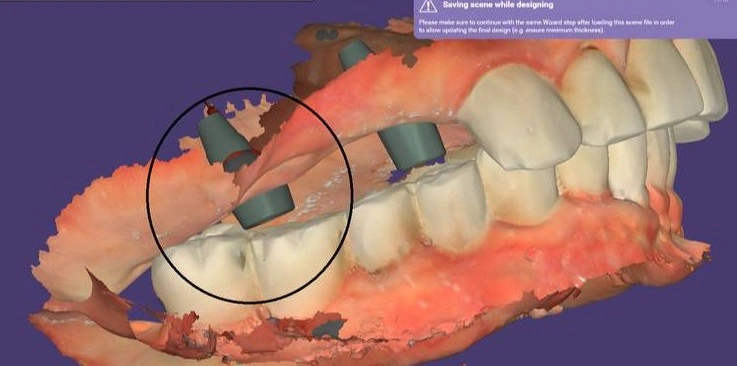

نسخه استخراجشده؛ ترجمه یا تأیید علمی انجام نشده است. وضعیت: captured
لابراتوار اسکن دیجیتال بیمار را برای بررسی فرستاده است. در ناحیهی دندان ۶ پایین، با کمبود شدید فضای بینفکی (Interocclusal Space) روبهرویی. این فضا را چطور مدیریت میکنی؟

پیشنهاد اولیهی لابراتوار، استفاده از Multi-Unit Abutment (MUA) و اسکن مجدد برای تبدیل پروتز به حالت پیچشونده (Screw-Retained) بود.
روکشهای فک مقابل بیمار PFM بودند و همین، سناریوی هوشمندانهتری را برای مدیریت فضای موجود ممکن کرد: بدون تغییر سیستم به Multi-Unit Abutment، بدون هزینهی سنگین برای بیمار و بدون آسیب به اصول بیومکانیک.
نکتهی کلینیکی: اگر با تعدیل فک مقابل فضای کافی به دست آید، میتوان روی سطح اکلوزال فلزی یک لایهی باریک سرامیک کشید؛ در غیر این صورت، اکلوزال فلزی بهترین ضمانت برای عدم شکستگی پرسلن و حفظ بیومکانیک رستوریشن در فضای محدود است.
کمبود فضا در پروتزهای ایمپلنت همیشه به معنای تحمیل هزینههای سنگین قطعات پیشرفته به بیمار یا دستکاریهای پیچیده نیست. گاهی با ترکیب دستکاری جزئی فک مقابل و اصلاح فرم مواد (مانند سطح اکلوزال فلزی و باکال چینی)، میتوان یک پروتز قابل پیشبینی، باکیفیت و متناسب با شرایط بیمار تحویل داد.